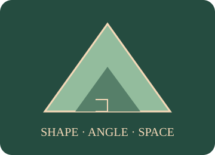

Geometry I
Reason with shapes, angles and space. Explore shape properties, polygon and parallel-line angles, compass constructions, compound area and perimeter.

What will you learn?
- Classify triangles, quadrilaterals and polygons by properties.
- Explain angle sums, regular polygons and parallel-line angles.
- Follow compass constructions for a bisector and perpendicular bisector.
- Calculate perimeter and area of single and compound shapes.
Build the idea, one step at a time.
Geometry describes position, shape and size. A point marks a position, a line segment joins two points, and an angle describes a turn between directions. Shape names tell you properties, such as equal sides or parallel edges; a drawing that looks convincing is not a proof. Read the stated properties before calculating.
Perimeter counts distance around a boundary, while area counts how many square units cover a region. Splitting a polygon into triangles explains its interior-angle sum: (n − 2) × 180°. Dividing that total by n finds one interior angle only when the polygon is regular. For compound shapes, include every exposed boundary in the perimeter and avoid counting shared internal edges.
01 · Triangles and quadrilaterals: look for properties
Classify shapes using side lengths, parallel sides, angles and symmetry.
A triangle has three sides; a quadrilateral has four. Rotate a drawing mentally: a tilted square is still a square.
Three equal sides and three angles of 60°. Three lines of symmetry.
3 sides · 180° interior angle sum
02 · Area and perimeter: start with a single shape
Use perpendicular height for area and count the boundary for perimeter.
Start with whole-number dimensions and rectangles, then try triangles. Write cm² for area and cm for perimeter.
The area counts square units inside. The perimeter counts the lengths of all four edges.
Area = 24 cm² · perimeter = 20 cm
03 · Build a polygon, then triangulate it
Discover the interior-angle sum and each interior angle of a regular polygon.
Begin with a triangle, quadrilateral and pentagon. Count triangles before using a formula.
Every polygon here is convex. Drawing diagonals from one vertex creates n − 2 triangles. Equal angles are guaranteed only when the polygon is regular.
Sum = 540° · each regular angle = 108°
04 · Parallel lines and a transversal
Use corresponding, alternate and straight-line angles instead of measuring the picture.
Mark an F for corresponding angles or a Z for alternate angles, after checking that the lines are parallel.
Corresponding angles are equal when the lines are parallel. Alternate angles are equal too; co-interior angles add to 180°. Angles on a straight line add to 180° and angles at a point to 360°.
Corresponding = 60° · straight-line partner = 120°
05 · Construct a bisector, one step at a time
Use equal compass radii to justify a perpendicular bisector or an angle bisector.
Move through stages 1–4 in order. Keep the compass opening unchanged between matching arcs.
Every point on the constructed line is equally far from A and B. Use a ruler/straightedge and compass on paper; the on-screen construction shows the geometric reason.
Stage 1: Draw segment AB.
06 · Area and perimeter of a compound shape
Separate the space inside a shape from the distance around its boundary.
Use whole-number lengths first. Split the L into two rectangles or subtract the missing rectangle; both methods give the same area.
The dashed corner is removed. Subtract its area from the large rectangle. Walk around every boundary edge for perimeter; do not subtract the missing corner’s perimeter.
Area = 68 cm² · perimeter = 36 cm
You can read these explanations without operating the simulator. The practical activities, games and revision below let you apply the ideas and check your reasoning.
Now investigate →Predict. Change. Explain.
Read the explanations, work on paper, then use the model to check a prediction. Practice here is separate from a recorded Test yourself quiz.
Compare, explain and try again
All instructions, models and worked examples are on this platform. Use “A little support” for a guided method, or “Go further” for extensions. Your working notes and lesson checks are not sent to the teacher.
Try it. Solve it. Play again.
Angle Dominoes and Fence & Floor: move cards, build a model and use feedback to work out the next step.
Ready to test your understanding?
Explore 60 questions for Geometry I. Select question areas and levels, practise with explanations or take Test yourself, then retry mistakes.